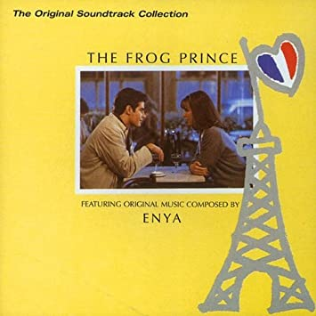

Other songs by Enya
Here are all songs released by Enya that are not included in her albums, such as singles b-sides, soundtracks or EPs. They have never appeared on a standard Enya album, except in a few cases as bonus tracks.
Also included are the Sounds of the Season/Christmas Secrets songs. Sounds of the Season was a Christmas extended play released in November 2006 in partnership with NBC. It featured the new recordings "Adeste, Fideles" ("Oh Come All Ye Faithful" in Latin), "The Magic of the Night", "We Wish You a Merry Christmas" and "Christmas Secrets", plus "Amid the Falling Snow" from Amarantine and "Oíche Chiúin" ("Silent Night" in Gaelic), that have been a b-side from the "Only Time" single.
In other countries, the album was included in a special box set with Enya's Amarantine album under the name Amarantine: Special Christmas Edition. It only includes the first four tracks of Sounds of the Season.
In 2019, this album was re-released with additional tracks as the Christmas Secrets compilation.
Also here are soundtrack songs, like "May It Be" and "The Frog Prince", and alternate versions of previous releases, like "Book Of Days" (English lyrics) and "Storms In Africa II".
Is this really an Enya song? There are some songs mistakenly attributed to Enya, like "Harry's Game" (by Clannad) or "Adiemus". Sometimes people think that they have heard Enya singing on the soundtrack of Gladiator or Titanic too. See this list of songs wrongly attributed to Enya.
Album releases before "Enya", 1987
Touch Travel, 1984
Touch Travel is a compilation (released only in the cassette format) which contains music by different artists. It has two instrumental pieces by Enya, still using her real name Eithne N� Bhraon�in: "An Ghaoth �n Ghrian" (The Solar Wind, 2:04, piano and synthesizer) and "Miss Clare Remembers" (2:02); the latter would be modified and includend in the album Watermark (1988).
Both tracks were produced by Nicky Ryan and recorded in Windmill Lane Studios in Dublin in 1983. About 5,000 copies of this compilation were printed.
The Frog Prince soundtrack, 1975
The commission for The Frog Prince soundtrack was obtained thanks to Roma Ryan: director David Puttnam was looking for a composer; Ryan sent some demos to the British director who, after listening to them, decided to entrust this task to Enya.
It has songs composed and performed by the Irish singer and other artists. These are mostly instrumental pieces with the exception of "The Frog Prince", "Dreams" (performed by Enya and produced by Nicky Ryan), and "Les Flon-Flons Du Bal" by Edith Piaf.
The remaining fourteen tracks, including the Piaf track, were produced by Richard Myhill. Released in 1985 in LP and cassette version for the Island Visual Arts label, it was released in CD format in 1995 for the Spectrum Music label. A further reissue in CD format took place in 1999 (always under the Spectrum Music label).
In the booklet there is a short biography about Enya:
"At the age of eighteen, Enya (Eithne N� Bhraon�in) joined Clannad's group, immediately his family. With them he recorded two albums going on tour in Europe for two years. Later he decided to devote his time to his own music. This album sees its first foray into the world of film music. It is a source of pride for Enya that David Puttnam has chosen his music for this project."
Lyrics list
- Book Of Days (English lyrics)
- Adeste, Fideles
- Christmas Secrets
- The Magic Of The Night
- We Wish You A Merry Christmas
- Storms In Africa II (English lyrics)
- Oíche Chiúin
- 'S Fagaim Mo Bhaile
- I May Not Awaken
- May It Be
- Aníron
- The Frog Prince
- Dreams
- Song of the Sandman
- Eclipse
Lyrics
Book Of Days (English lyrics)
Roma Ryan
One day, one night, one moment,
my dreams could be, tomorrow.
One step, one fall, one falter,
east or west, over earth or by ocean.
One way to be my journey,
this way could be my Book of Days.
Ó lá go lá, mo thuras,
an bealach fada romham.
Ó oíche go hoíche, mo thuras,
na scéalta nach mbeidh a choích.
No day, no night, no moment,
can hold me back from trying.
I'll flag, I'll fall, I'll falter,
I'll find my day may be, Far and Away.
Far and Away.
One day, one night, one moment,
with a dream to believe in.
One step, one fall, one falter,
and a new earth across a wide ocean.
This way became my journey,
this day ends together, Far and Away.
This day ends together, Far and Away.
Far and Away.
Adeste, Fideles lyrics
TraditionalAdeste, fideles laeti triumphantes;
Venite, venite in Bethlehem;
Natum videte regem angelorum:
Venite, adoremus,
Venite, adoremus,
Venite, adoremus, dominum!
Deum de Deo, lumen de lumine,
Gestant puellae viscera;
Deum verum, genitum non factum.
Venite, adoremus,
Venite, adoremus,
Venite, adoremus, dominum!
(Cantet nunc io chorus angelorum,
Cantet nunc aula caelestium,)
Gloria in excelsis Deo!
Venite, adoremus,
Venite, adoremus,
Venite, adoremus, dominum!
Translation
Come, ye faithful
Be present, faithful, joyful, triumphant
Come, come into Bethlehem
Behold the arisen, king of angels
Chorus:
Come, let us adore
Come, let us adore
Come, let us adore the Lord
God of God, light of light
He abhors not the Virgin's womb
Very God, begotten, not created
(Chorus)
Glory to God in the highest
(Chorus)
Christmas Secrets lyrics
Roma RyanUnderneath a winter sky
A distant train sings out the miles
And so I wonder, can it be
Will every mile bring you to me?
A promise made may still come true
So I am waiting here for you
If you don't come, what will I do?
Whom shall I tell my secrets to?
Christmas bells ring out their chimes
I hear them echo through the night
And moonlight shines upon the road
And trembles on the falling snow
I look into the midnight blue
So many stars I never knew
If you don't come, what will I do?
Whom shall I tell my secrets to?
(2x)
The Magic Of The Night lyrics
Roma RyanWhen the stars are in the skies
Make a wish, then close your eyes
Are you dreaming? Angels singing
Everything is right
It's the magic of the night
Far horizons made of snow
Bring the hopes each child will know
Someone's dreaming, bells are ringing
Everything is white
It's the magic of the night
High up in the sky
Can you see a shining light?
Can it be that we can see
An angel who is flying, flying?
Can an angel lose their way
Who of us on earth can say?
Someone's dreaming, angels singing
Everything is right
It's the magic of the night
High up in the sky
Can you see a shining light?
Can it be that we can see
An angel who is flying, flying?
When the stars are in the skies
Make a wish, then close your eyes
Are you dreaming? Bells are ringing
Angels are in flight
It's the magic of the night
Angels are in flight
It's the magic of the night
We Wish You A Merry Christmas lyrics
Roma RyanWe wish you a merry Christmas
We wish you a merry Christmas
We wish you a merry Christmas
And a happy new year
(2x)
Good tidings we bring
To you and your kin
We wish you a merry Christmas
And a happy new year
We all want some figgy pudding
We all want some figgy pudding
We all want some figgy pudding
So bring some right here
We won't go until we get some
We won't go until we get some
We won't go until we get some
So bring some right here
Good tidings we bring
To you and your kin
We wish you a merry Christmas
And a happy new year
(2x)
We wish you a merry Christmas
We wish you a merry Christmas
We wish you a merry Christmas
And a happy new year
(2x)
Storms In Africa II (English lyrics)
This is the second version of that song, originally in Gaelic.
Roma RyanThough I walk through
warm sands in Africa
winds will grow soon
to storms in Africa.
How far to go
I cannot say.
How many more
will journey this way?
Dark skies fall on
black earth and ivory.
Far from your sun
clouds now close over me.
How far to go
I cannot say.
How many more
will journey this way?
Storms have come!
rains wash the earth away
Dark skies fall down
into another day.
Rains have now come
from storms in Africa
Time will go on
through Storms in Africa
Oíche Chiúin lyrics
TraditionalOíche chiúin, oíche Mhic Dé,
Cách 'na suan dís araon.
Dís is dílse 'faire le spéis
Naíon beag, leanbh ceansa 'gus caomh.
Críost, 'na chodladh go sámh.
Críost, 'na chodladh go sámh.
Oíche chiúin, oíche Mhic Dé,
Aoirí ar dtús chuala 'n scéal.
Allelúia aingeal ag glaoch.
Cantain suairc i ngar is i gcéin.
Críost an Slánaitheoir Féin.
Críost an Slánaitheoir Féin.
Translation
Silent Night
Silent night, night of God's son,
Everyone is asleep, the pair together.
The most faithful pair, watching with hope
A little baby, a mild and gentle child.
Christ, calmly asleep.
Christ, calmly asleep.
Silent night, night of God's son,
Shepherds were first to hear the tale.
The angels crying out Alleluia.
Lovely chanting near and far.
Christ, the saviour himself.
Christ, the saviour himself.
'S Fagaim Mo Bhaile lyrics
Roma RyanMaidin is tús an lae
Is fágaim mo bhaile
Tá mo chroíse go brón
Is fad ar shiúl m'óige
Oíche is mé liom féin
Spéartha dubh go domhain, a choích
Ag cuimhneach ar laethanta a bhí
Gan ghá agus gan ghruaim
Eistim leis an ghaoth
Uaigneas mór, go deo, a choích
Deireadh an turas mór
Táim brónach, buartha 's briste
I mo dhiaidh nach mbeidh níos mó
Ach, tá sé i ndán dúinn, a pháistí
Is fada anois an lá
A d'fhág mé mo bhaile
Níl áthas i mo chroí
Níl ann ach an marbh.
Translation
And I Leave my Home
Morning and the start of the day
and I leave my home.
My heart is grieving
and my youth is long past.
Chorus:
Night and I am alone.
Endless deep black skies.
Recollecting the days that were
carefree and happy
I listen to the wind.
Great loneliness, forever, and ever.
The end of the great journey,
I am sad, sorrowful, and broken.
After me, there will be nothing more,
but, it is our fate, children.
but, it is our fate, children.
Chorus
Long ago was the day
that I left my home.
There is no joy in my life.
Nothing is left except the dead.
Repeat last line
I May Not Awaken lyrics
Roma RyanWhen the warmth of the day becomes the night
Who could sleep beneath a strange moonlight?
No guiding star
So far from home
Walked the way o' promise to find but snow
Throughout, the voice of the winds brings nothing more
Than low echoes
So far from home
Even from a child
A wish is not enough
For me, for me the sky may fall
And even from a child
A dream is not enough
Could be, could be the sky may fall
Could be, could be the night ends all
No rains could weep as I have wept
To know a simple dream will not be kept
I am a child
So far from home
One by one the sky falls
I may not awaken
May It Be lyrics
From the soundtrack of The Lord of the Rings: The Fellowship of the Ring.
Roma RyanMay it be an evening star
Shines down upon you
May it be when darkness falls
Your heart will be true
You walk a lonely road
Oh! How far you are from home
Mornië utúlië (Darkness has come)
Believe and you will find your way
Mornië alantië (Darkness has fallen)
A promise lives within you now
May it be the shadow's call
Will fly away
May it be your journey on
To light the day
When the night is overcome
You may rise to find the sun
Mornië utúlië (Darkness has come)
Believe and you will find your way
Mornië alantië (Darkness has fallen)
A promise lives within you now
A promise lives within you now
Aníron lyrics
From the soundtrack of The Lord of the Rings: The Fellowship of the Ring. The lyrics in italics are not included in the version feaured on the soundrack.
Roma RyanE mor henion i dhu:
Ely siriar, el sila.
Ai! Aniron Undomiel.
Tiriel arad �ala mor
Minnon i dhu- sad oltha.
Ai! Aniron Edhelharn.
Alae! Ir el od elin!
I �lir uin el luitha guren.
Ai! Aniron Undomiel.
I lacha en naur e-chun
Sila, eria, bronia.
Ai! Aniron Edhelharn
Translation
Out of darkness I understand the night:
Dreams flow, a star shines.
Ah! I desire Evenstar.
Having watched the day grow dark
I go into night - a place to dream.
Ah! I desire Elfstone.
Behold! The star of stars!
The song of the star enchants my heart.
Ah! I desire Evenstar.
The flame of the fire of the heart
Shines, rises, endures.
Ah! I desire Elfstone.
The Frog Prince lyrics
from The Frog Pince film soundtrackRoma Ryan
Deep in my dreams,
I saw you close by my side.
And the words you said to me,
made me reel down deep inside.
My hand in your hand,
so warm and so lovingly.
Leaving all my dreams behind,
wonder who my prince will be?
Chorus:
What is this wonder,
that love can make you feel?
Am I deep now in slumber,
or is my prince real?
Now, now my dream,
is standing close by my side.
Saying words I wish to hear,
and I'm reeling deep inside.
Chorus
Morning has come,
my dreams are left far behind.
As I walk through Paris streets,
I know now what I shall find.
This smile on my face,
will carry a love I have known.
Like a fairytale come true,
oh, what joy this love has shown
Dreams lyrics
from The Frog Pince film soundtrackC. McGettigan
You're everything my dreams have seen.
But, what are dreams?
I'm walking where my dreams have been.
But, what are dreams?
Can I believe these spells I feel?
I'm wary now.
Can I believe, or is this real?
I'm wary now.
Just like some new-born creature, I.
What are dreams?
A child in need of love and care.
Tell me what, tell me what, are dreams?
Can I believe these spells I feel?
I'm wary now.
Can I believe, or is this real?
I'm wary now.
Just like some new-born creature, I.
What are dreams?
A child in need of love and care.
Tell me what, tell me what, are dreams?
Song of the Sandman lyrics
Roma RyanCan you hear in night's deep song
all the shadows say
telling you when you're asleep
tears will fade away
Dream of morning's golden light
when you and I will leave the night
And when the moon is high and bright
stars will shine on you
Dream of morning's golden light
when you and I will leave the night
Make a wish and when you close your eyes
I will come to you
Dream of morning's golden light
when you and I will leave the night
Make a wish and when you close your eyes
I will come to you
Eclipse lyrics
Roma RyanAut na hdaeried.
Hbram nnarhc na is.
Ru nialhb an sut.
Anhmas an is.
Oh or, oh o.
Ih o si nnaaerioh.
Oed og moil naf
nairhg na is.
Ehcio nas llam
hcalaehg na is.
Songs wrongly attributed to Enya
Adiemus [Karl Jenkins] (Listen to the song)
Ameno [Era] (Listen to the song)
Anam Cara [Medwyn Goodall: Anam Cara] or [Anam Cara [by Aeone, from The Woman's Touch]
A New Day Has Come [Celine Dion with NO back-ups by Enya]
A Neverending Dream [X-Perience]
Angelica [SEAY]
Anthem [Ronan Hardiman]
Arcadia [Miriam Stockley: Miriam]
Ask the Mountains [Vangelis] (Listen to the song)
Bonny Portmore [Loreena McKennitt, known by downloading as Highlander (or Highlander End Theme] (Listen to the song)
Braveheart Theme [James Horner] (Listen to the song)
Caeli et Terra [perhaps "Prism of Life" by Enigma]
Cagaran Gaolach [Mary Jane Lamond]
Celtic Rain [Mike Oldfield: Voyager] (Listen to the song)
Dance With A Stranger [Yanni, from his album: Tribute]
Dark Garden [The Java Quartet]
Deliver Me [Sarah Brightman]
Don't fear (the reaper) [Nick Cave]
Dragonfly (instrumental)
Eden (Sarah Brightman)
Elian [by Enam, from M'Achelli]
Etre Sans Age (You Belong) [by Anael, from Spiritual Beings on a Human Journey]
Ever After [George Fenton]
Everyone's Gone to the Moon [Nina Simone]
Fading Hues [aka "Longing for Ashira" by Enam]
Feng Shui [Daniel May]
Final Fantasy [Uemastu, Mitsuda, Shimomura]
Fire and Ice (instrumental) = false title for Boadicea
Gravity of Love [Enigma: The Screen Behind the Mirror]
Harry's Game [Clannad: Magical Ring ] (Listen to the song)
Here with Me remix [Dido] (Listen to the song)
Highlander [Darby DeVon]
Hills of Ireland [Mychael and Jeff Danna, A Celtic Romance]
Horizon [Eri Sugai: Mai]
Iapetus [Infrared Uforia]
In The Arms Of Eternity [die sektor]
I Will Find You, from Last of the Mohicans [Moya Brennan/Clannad] (Listen to the song)
Jigga Jigga [Scooter]
Key of the Twilight [by Yuki Kajiura, from anime]
Kiss the Book [by Moya Brennan]
Love Song [ Leslie Dowdall/Ronan Hardiman]
Metamorphosis [by Eden, from Spiritual Chillout]
Mor Rioghain - [perhaps "The Call of Mor-rioghain" by Vae Victis]
Mummers Dance [Loreena McKennitt] (Listen to the song)
My Heart Will Go On [Celine Dion] (Listen to the song)
Mysterium [Libera Boys Choir, from Libera]
Never [by Ronan Hardiman, from Anthem]
Now We Are Free [Lisa Gerrard] (Listen to the song)
Ocean of Sin/Sea of Sin
Om Namo Bhagavate [by Deva Premal, from Embrace]
On Sacred Ground [Yanni: If I Could Tell You] (Listen to the song)
Perfect Time [Moya Brennan]
Relax [Kenny G]
Remember Now [2002]
Return to Innocence [Enigma: The Cross of Changes] (Listen to the song)
Salve Me
Secret World [Ronan Hardiman]
Skin 2 Skin [by Diane Arkenstone, from Jewel in the Sun]
Song for Ireland [Mary Black]
Suddenly Yours [2002, from the album This Moment Now]
Sweet Lullaby [Deep Forest]
The Closing Of The Year [Horn/Zimmer: Toys]
The Eyes Of Truth (Matrix Theme) [Enigma: The Cross of Changes] (Listen to the song)
The Hills Of Ireland [Samuel Ferguson]
The Mystic's Dream [Loreena McKennitt: The Mask and Mirror] (Listen to the song)
Voices [Dario G ]
Waiting for the Wind to Blow [Cantara]
What Child is This [composed by William Chatterton Dix (1837-1865), and sung by many different artists through the years, but not by Enya.]
Winter [by Iona, from The river flows, CD 4]
Wish You Were Here [Blackmore's Night: Shadow of the Moon]
World of Wonders - [perhaps "Across The World Of Wonders" by Mortiis or F.R.E.U.D.] (Listen to the song)
Soundtracks mistakenly attributed to Enya
At First Sight [Mark Isham]
Braveheart OST [James Horner] (Listen and download the MP3)
Earth: Final Conflict [Micky Erbe and Maribeth Solomon]
Gladiator [Hans Zimmer] (Listen and download the MP3)
Titanic [James Horner] (Listen and download the MP3)